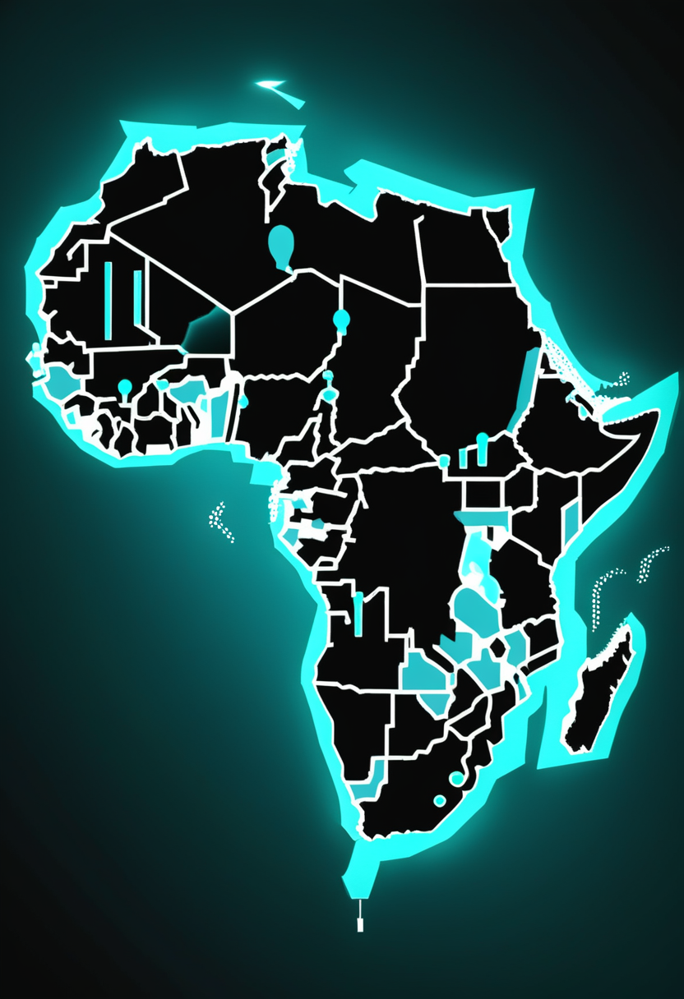
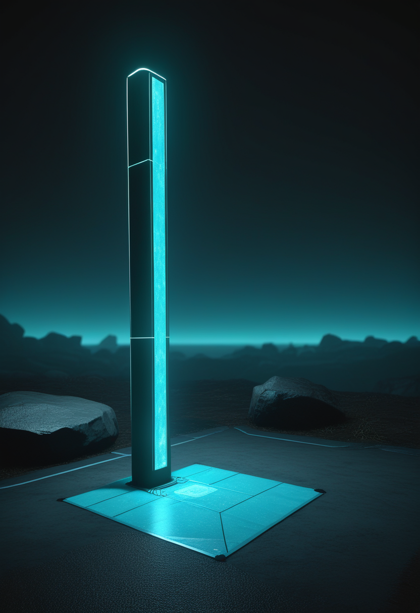
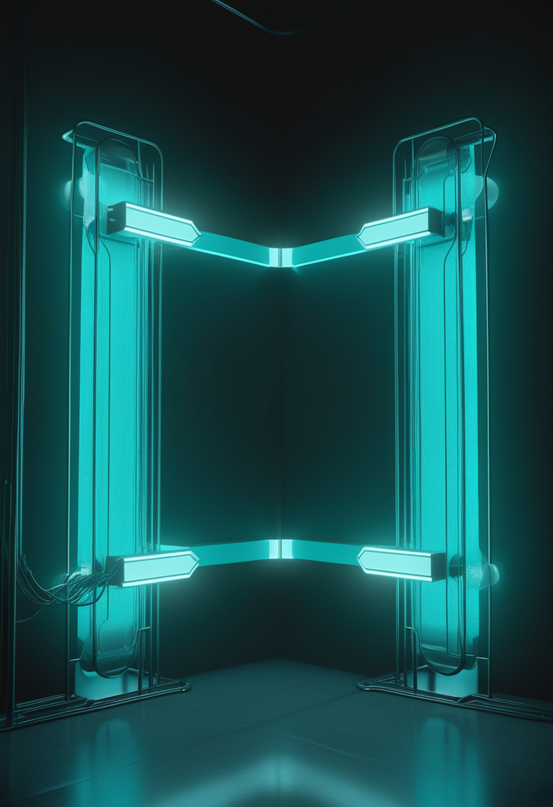
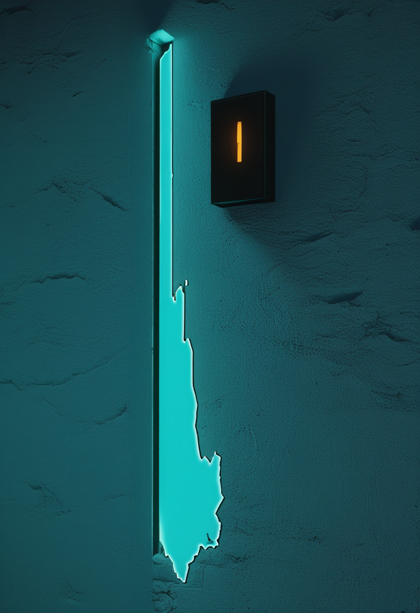
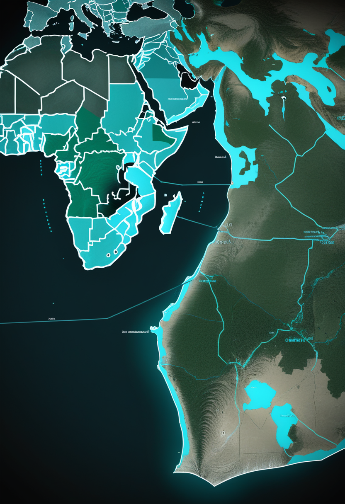
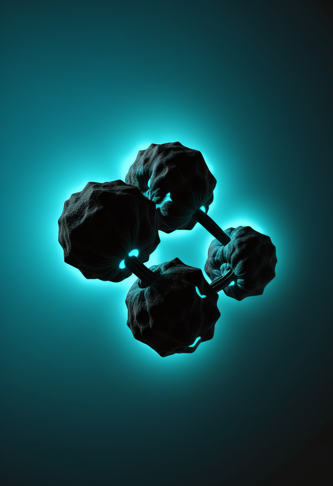

木曜日の便り。コンゴ民主共和国(DRC)のエボラ(ブンディブギョ型)は8月31日までの集計で確定6,186例・死亡3,007人に達し、死者数が3,000人の大台を超えた。致死率は約48.6%で、ワクチンも特異的治療薬もない型のまま増加が止まらない。自由の章では、中国がNMPAの承認により埋め込み型BCIで世界初とされる医療機器認可に踏み出したことと、SynchronがCOMMAND試験で機器関連の重篤な有害事象ゼロ・留置成功率100%という結果を携えて2026年のピボタル試験に臨むことを報じる。命の章では、次世代アンチセンス核酸サラネルセンの第1相中間結果と、9月30日のFDA判断が近づくアピテグロマブの根拠試験SAPPHIREの詳細データを伝える。基盤の章では、コレラの流行国数をめぐる集計定義の食い違いを整理し、米国外でのH5N1ヒト感染12例・死亡3例という状況を並べる。畏敬の章では、JWSTが初期宇宙の巨大銀河の質量がこれまでの推定の最大4倍だった可能性を示したことと、IBMが誤り耐性量子計算に向け極低温モジュールの連結に成功したことを紹介する。美の章では、『脳のデジタルツイン』の限界が計算力ではなく計測工学にあるという総説と、UNESCOが採択した神経技術の倫理をめぐる世界的枠組みを取り上げる。

9/2号の続報 ― コンゴ民主共和国(DRC)のエボラ(ブンディブギョ型)は、8月31日までの集計で確定6,186例・死亡3,007人に達し、死者数が3,000人の大台を超えた。前回報告(8月30日時点の6,100例・2,950人)からわずか1日で86例・57人が積み増された計算になる。致死率は約48.6%(前号48.4%)でほぼ横ばいだが、絶対数の増加は止まっていない。新規86例の内訳はイトゥリ州49例・北キブ州32例・オー・ウエレ州5例。回復1,409人、隔離入院830人で、接触者の88%が追跡下にある。ワクチンも特異的治療薬も存在しない型で、5月17日にはPHEIC(国際的に懸念される公衆衛生上の緊急事態)が宣言されている。
既存治療の効果が乏しい患者への次の一手をどう作るか ― Cure SMA 2026の報告は、遺伝子治療やリハビリテーションを受けてもなお反応が不十分な患者を対象に、次世代アンチセンス核酸サラネルセンの安全性・忍容性・薬物動態を評価した第1相の中間結果を伝えた。アピテグロマブとリスジプラムを併用するemugrobartのデータとあわせ、有効性の数字だけでなく、投与負担や投与間隔といった患者側の実務面も並べて論じられている点が特徴だ。

9月30日にFDA判断を控えるアピテグロマブの根拠試験SAPPHIREは、ヌシネルセンまたはリスジプラムを使用中の2〜21歳・非歩行型SMA2型/3型患者188人を対象とした52週間の二重盲検試験である。主要評価のHFMSE(ハマースミス機能運動尺度拡張版)でプラセボに対し統計的に有意な改善を示し(p=0.019)、3点以上の改善はアピテグロマブ群30.4%対プラセボ群12.5%、4点以上は19.6%対6.3%だった。MDA 2026で示された解析では、12カ月時点の併合群が平均+1.8点、プラセボ群は約−1.2点と、既存治療の上に積み増された分の効果が数字として整理されつつある。
サラネルセンの第1相は『反応しなかった患者に何を足すか』を、SAPPHIREの内訳は『足した効果をどう測るか』を扱っている。9月30日のアピテグロマブ判断が近づくほど、争点は承認の有無から、承認後にどの数字が現場を動かすかへ移っていく。
中国の国家薬品監督管理局(NMPA)は、埋め込み型ブレイン・コンピュータ・インターフェース(BCI)を医療用途で承認したと報じられている。埋め込み型BCIの正式な製造販売承認としては世界初とされ、NMPAが2025年12月に『埋め込み型BCI医療機器』を高度医療機器の優先審査対象へ追加していたことが、制度面の後押しとして先行していた。承認の正確な時期については情報源により3月・4月の表記が分かれており、原典での確認が必要である。
血管経由で運動野近傍に留置するStentrodeを持つSynchronは、FDA承認申請(PMA)の前提となるピボタル試験を2026年に実施する構えだ。先行するCOMMAND試験は、恒久留置型BCIとして初めてFDAのIDE(治験機器適用免除)を取得した試験で、6例において機器関連の重篤な有害事象がゼロ、留置成功率100%という結果を示した。2025年11月6日に発表した2億ドルのシリーズDが、この先のピボタル試験と商用化準備の原資になる。
NeuralinkのPRIME試験は2026年初頭までに米国・英国・カナダ・UAEで約21人に埋め込みを実施してきた。ここにロボットアーム操作を狙うCONVOY、発話再建を狙うVOICE(FDAのMilestone Device指定を取得)が加わり、評価項目はカーソル操作の外へ広がりつつある。視覚再建を目指すBlindsightは規制当局の承認待ちの段階で、初移植の時期はまだ確定していない。
話題の中心が『誰が最初に埋め込むか』から『誰が最初に承認を取るか』へ移って久しいが、今日はその手前の話が並んだ。中国は承認そのものに踏み出し、Synchronは安全性データを積み増し、Neuralinkは評価項目を広げた。規制のマイルストーンと臨床の実績が、それぞれ別の速度で進んでいる。

コンゴ民主共和国(DRC)のエボラ(ブンディブギョ型)は、8月31日までのデータで確定6,186例・死亡3,007人に達した。前回報告(8月30日時点の6,100例・2,950人)からわずか1日で86例・57人が積み増され、死者数は3,000人の大台を超えた。致死率は約48.6%でほぼ横ばい。新規86例の内訳はイトゥリ州49例・北キブ州32例・オー・ウエレ州5例で、引き続きイトゥリ州に被害が集中している。回復1,409人、隔離入院830人、接触者の88%が追跡下にある。ワクチンも特異的治療薬も存在しない型で、5月17日にPHEICが宣言されたままだ。

国連の8月12日発表によれば、活発なコレラ流行が確認されているのは西・中央アフリカの6カ国である。ナイジェリアが2026年1月以降5万例超・338人死亡と域内最大で、DRCは3万400例超・約700人死亡と死者数が最も多い。チャド湖流域(チャド・カメルーン・ナイジェリア)では同一のVibrio cholerae O1小川型が、コンゴ川流域(DRC・コンゴ共和国・中央アフリカ共和国)では別の連鎖が広がっている。前号で用いた『12カ国』はUNICEFによる、より広い警戒対象国数であり、ここでの『活発な流行6カ国』とは集計の定義が異なる。
米国CDCのまとめによれば、2025年8月4日から2026年6月10日にかけて米国外3カ国(バングラデシュ・カンボジア・インド)で12例のヒト感染が報告され、うち3人が死亡した(バングラデシュ1人、カンボジア2人)。ヒト-ヒト感染は確認されていない。米国内では2024年から2026年5月までの累計が71例・死亡2人で、2026年8月7日時点の監視では鳥インフルエンザを含む異常な活動は検出されていないという。
エボラは『増加が止まらない』こと自体がニュースであり、致死率がほぼ一定のまま母数だけが増える局面は検出網が追いついていない兆候でもある。コレラは12カ国か6カ国かという集計の定義そのものが揺れており、H5N1は逆に『異常なし』という静けさが際立つ。基盤の章が試しているのは病原体ではなく、数え方の正確さかもしれない。
JWSTと地上のVLTのデータを組み合わせ、はるか昔に星形成を止めた成熟銀河9個を解析した研究で、これらの銀河には小さく暗い星が予想よりはるかに多く含まれることが分かった。星の重さの配分(初期質量関数)の見直しにより、銀河の総質量はこれまでの推定の最大約4倍になりうるという。初期銀河がどう形成されたかという理論にとって、新たな難題が加わったことになる。

JWSTの赤外線画像から、125〜128億年前に位置するリトル・レッド・ドットの近接ペアが4組見つかった。数千〜数万光年という間隔で、色の画素単位解析から偶然の重なりとは考えにくいという。初期のブラックホール成長に銀河同士の合体が関与した可能性を支持する結果であり、9/2号で報じた新種天体『ブラックホール恒星』MoM-BH*-1の発見に続き、リトル・レッド・ドットという謎の天体群の正体解明が少しずつ進んでいる。
IBMは8月19日、2つの極低温モジュールを接合し単一の環境として冷却することに成功したと発表した。数百個の量子チップを結んで大規模問題を解くために必要な、モジュール式・共有型の超低温システムへ向けた土台となる。同社が2029年の実現を掲げる世界初の誤り耐性量子コンピュータ『IBM Quantum Starling』に向けたマイルストーンと位置づけている。
JWSTは『見えていなかった軽い星』を、リトル・レッド・ドットは『見えていた点の裏にある合体』を、IBMは『つなぐための冷やし方』を課題として突きつけた。どれも派手な新発見というより、土台の作り直しに関する報せである。
Nature Reviews Electrical Engineeringの総説は、生きた脳をソフトウェア上で写し取るデジタルツインの律速要因が、スーパーコンピュータの能力ではなく『生体から何をどこまで測れるか』にあると論じる。記録技術・コネクトミクス・構造から機能への推論・検証手法のいずれもが未解決で、ヒト全脳エミュレーションの実現時期を示せる段階にはない。規模の面では、GPUスーパーコンピュータ上で860億ニューロン・47.8兆シナプス規模の全脳シミュレーションを実装したとする既存の報告もあるが、『規模の再現』と『意識の再現』は別問題であり、後者を支持する証拠は依然ない。
UNESCOは2025年11月、神経技術の倫理に関する初の世界的枠組み(勧告)を採択し、190カ国超が賛同した。勧告は、神経技術による能力増強の使用を個人に直接・間接に強いることの禁止や、人間の尊厳・アイデンティティ・機会の平等を損なう増強用途の禁止を加盟国に求めるが、法的拘束力はない。チリは2021年に憲法へニューロライツを書き込み、企業に市民の脳データ削除を命じた実例を持つ ― 規範づくりが技術より速く動き始めている一方、拘束力の欠如がこの先の論点になる。
『測れないものは写せない』。デジタルツイン脳の限界は哲学ではなく計測工学にある。他方、ニューロライツの規範づくりは技術より速く動き始めており、拘束力の欠如が次の論点になる。写す技術と、写されることを守る規範は、まだ足並みがそろっていない。
木曜日の便り。コンゴ民主共和国のエボラ(ブンディブギョ型)は8月31日までの集計で確定6,186例・死亡3,007人に達し、死者数が3,000人の大台を超えたことを伝えた。自由の章では、中国がNMPAの承認により埋め込み型BCIで世界初とされる医療機器認可に踏み出したことと、SynchronがCOMMAND試験で機器関連の重篤な有害事象ゼロ・留置成功率100%という結果を携えて2026年のピボタル試験に臨むことを報じた。命の章では、次世代アンチセンス核酸サラネルセンの第1相中間結果と、9月30日のFDA判断が近づくアピテグロマブの根拠試験SAPPHIREの詳細データを伝えた。基盤の章では、コレラの流行国数をめぐる集計定義の食い違いを整理し、米国外でのH5N1ヒト感染12例・死亡3例という状況を並べた。畏敬の章では、JWSTが初期宇宙の巨大銀河の質量がこれまでの推定の最大4倍だった可能性を示したことと、IBMが誤り耐性量子計算に向け極低温モジュールの連結に成功したことを紹介した。美の章では、『脳のデジタルツイン』の限界が計算力ではなく計測工学にあるという総説と、UNESCOが採択した神経技術の倫理をめぐる世界的枠組みを取り上げた。
では、また明日の朝に。 — JaH